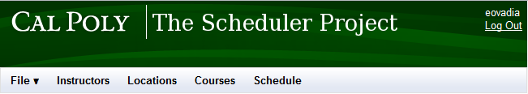

The User Interface Overview will deal will all the user interface objects that are common across multiple pages. The specific user interface elements on each page will be explained on that specific page.
At the top of all pages will be the top green header, see Fig. 2.1.1.
Figure 2.1.1: Title Header
After the user has logged in via the login page, they will see two labels on the top right: their username, and a logout link.
Figure 2.1.1: Title Header
In all pages except for the login page and the home page, they will see the full top interface on every page they visit, including the top green header and the menu bar. The menu bar is used for navigation.

Figure 2.1.2: Full Header
The File button opens the File menu (see section 2.6).
The Instructors Button takes the administrator to the Instructor Overview page where the administrator can manage the Instructors data in the system.
The Courses Button takes the administrator to the Course Overview page where the administrator can manage the Courses data in the system.
The Locations Button takes the administrator to the Location Overview page where the administrator can manage the Locations data in the system.
The Schedule Button takes the administrator to the Schedule Setup page where the administrator can view, edit and export a schedule.
Upon starting the application, the user is greeted with the main login screen, shown in Figure 2.1.2.1. The user enters their Cal Poly username and password, then clicks Login.
Figure 2.1.2.1: The Login screen
The user is taken to the home page, shown below.
Once an administrator has successfully validated their credentials and logged in, they are greeted with the Home screen. This screen displays a list of all previous schedules, in addition to the ability to create a new schedule or edit the list of instructors, courses, or locations.

Figure 2.1.2.1: The Home screen
The Previous Schedules list displays a list of all schedules saved to the department. The user may view or edit any schedule by selecting it from the list and clicking Open. Doing so opens the schedule in the default list view. From here, the user may print the schedule, edit the schedule, or save a copy of the schedule.
The ability to save a copy supports a wide array of functionality. If a user wishes to use an old schedule as a template for a new one, they may easily load up the old schedule and save a copy to be used as a template for the new quarter. The user may then load the new copy and edit it as appropriate for the quarter in question. This also makes it quick and easy to make backups or multiple versions of an in-progress schedule.
The Home screen also provides the user the ability to create a new, blank schedule. Doing so will present the user with the blank schedule editor. See that slide for additional information on creating a new schedule.
The Add/Remove links at the bottom of the Home screen allow the user to manage instructors, courses, and locations. This functionality allows the user to edit instructors, courses, and rooms before creating a schedule.
The numbers next instructors, courses and locations correspond to the number of entries of each type in the permanent databases.